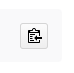
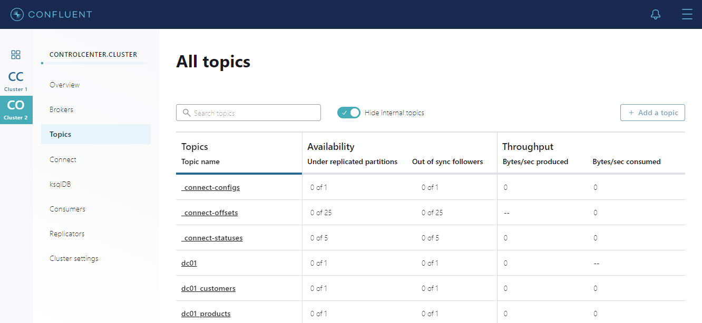
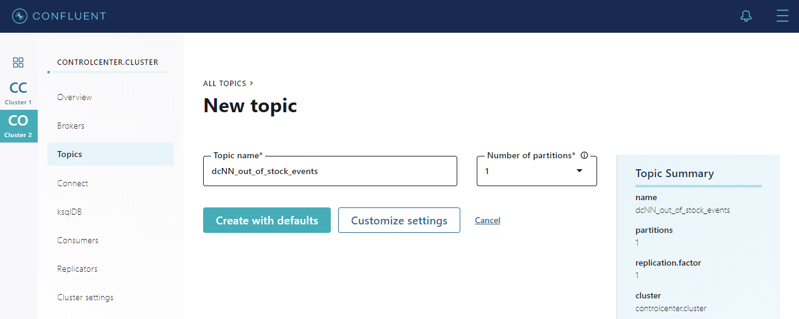

Introduction
The popularity of Hybrid and Multi cloud architectures are on the rise as organizations continue to take advantage of cloud computing.
Some of the requirements driving these new modern architectures are as follows.
Organizations need to…
-
Synchronize data between on-premise and the cloud
-
Migrate data from on-premise into the cloud
-
Synchronize data across multiple cloud providers to reduce risk
-
Synchronize data across multiple cloud providers to avoid vendor lock-in
-
Access the best-in-breed services across multiple cloud providers
In addition to Hybrid and Multi cloud architectures, organizations are also looking to become more event driven. The Confluent Platform is a streaming platform that can stream data, in real time, to the systems that need it, when they need it, across an entire organization. Processes that were once batch can now become real time, every event can be used to trigger other services and this can all be done using a common API with low latency and high throughput.
In this workshop we will explore how the Confluent Platform and Confluent Cloud can enable these architectures by building a real time supply and demand appplication using ksqlDB.
Lab 1: Connecting to your Workshop Environment
Your environment represents an on-premise data center and consists of a virtual machine hosted in the cloud running several docker containers. In a real world implementation, some of the components would be deployed differently but the logical data flow that we will be working on would remain the same.
To login to your virtual data center open a terminal session and use the credentials that were assigned to you
ssh dc@localhostOnce logged in run the following command to confirm that you have several docker containers running
docker ps --format "table {{.ID}}\t{{.Names}}\t{{.RunningFor}}\t{{.Status}}"You should see something similar to this.
CONTAINER ID NAMES CREATED STATUS
ef959fb9e566 db-trans-simulator 3 minutes ago Up 3 minutes
979c20e26e60 ksqldb-cli 3 minutes ago Up 3 minutes
0d9e1fa2c83f ksqldb-server-ccloud 3 minutes ago Up 3 minutes
4eb1ba589357 control-center 3 minutes ago Up 3 minutes
e83088712e60 kafka-connect-ccloud 3 minutes ago Up 3 minutes
c2362c0fc8e0 kafka-connect-onprem 3 minutes ago Up 3 minutes
82086be4e239 schema-registry 3 minutes ago Up 3 minutes
62b037976674 broker 3 minutes ago Up 3 minutes
92c955b221f3 zookeeper 3 minutes ago Up 3 minutes
0794f9008bb6 mysql 3 minutes ago Up 3 minutes (healthy)
31c3c1372aa1 workshop-docs-webserver 3 minutes ago Up 3 minutes|
Whenever you see this icon it means the step is mandatory. Missing one of these steps will result in the data pipeline not working as expected. |
|
Take advantage of the copy to clipboard button, it will save you some time!

|
Lab 2: Getting Started
The primary data source for this workshop is a MySQL database running in your data center. Connected to this database is a orders application which we will discuss shortly.
Database Schema
The MySQL database contains a simple schema that includes Customer, Supplier, Product, Sales Order and Purchase Order information.
The idea behind this schema is simple, customers order products from a company and sales orders get created, the company then sends purchase orders to their suppliers so that product demand can be met by maintaining sensible stock levels.
We can inspect this schema further by logging into the MySQL CLI…
docker exec -it mysql bash -c 'mysql -u root -p$MYSQL_ROOT_PASSWORD --database orders'…and viewing your tables
show tables;There’s an extra table here called dc_out_of_stock_events that not in the schema diagram above, we’ll cover this table separately later on.
+--------------------------+
| Tables_in_orders |
+--------------------------+
| customers |
| dc_out_of_stock_events |
| products |
| purchase_order_details |
| purchase_orders |
| sales_order_details |
| sales_orders |
| suppliers |
+--------------------------+
8 rows in set (0.00 sec)Let’s view the row count for each table
SELECT * from (
SELECT 'customers' as table_name, COUNT(*) FROM customers
UNION
SELECT 'products' as table_name, COUNT(*) FROM products
UNION
SELECT 'suppliers' as table_name, COUNT(*) FROM suppliers
UNION
SELECT 'sales_orders' as table_name, COUNT(*) FROM sales_orders
UNION
SELECT 'sales_order_details' as table_name, COUNT(*) FROM sales_order_details
UNION
SELECT 'purchase_orders' as table_name, COUNT(*) FROM purchase_orders
UNION
SELECT 'purchase_order_details' as table_name, COUNT(*) FROM purchase_order_details
) row_counts;As you can see, we have 30 customers, suppliers and products, 0 sales orders and 1 purchase order.
+------------------------+----------+
| table_name | COUNT(*) |
+------------------------+----------+
| customers | 30 |
| products | 30 |
| suppliers | 30 |
| sales_orders | 0 |
| sales_order_details | 0 |
| purchase_orders | 1 |
| purchase_order_details | 30 |
+------------------------+----------+
7 rows in set (0.00 sec)The single purchase order was created so we have something in stock to sell, let’s have a look at what was ordered.
SELECT * FROM purchase_order_details;+----+-------------------+------------+----------+------+
| id | purchase_order_id | product_id | quantity | cost |
+----+-------------------+------------+----------+------+
| 1 | 1 | 1 | 100 | 6.82 |
| 2 | 1 | 2 | 100 | 7.52 |
| 3 | 1 | 3 | 100 | 6.16 |
| 4 | 1 | 4 | 100 | 8.07 |
| 5 | 1 | 5 | 100 | 2.10 |
| 6 | 1 | 6 | 100 | 7.45 |
| 7 | 1 | 7 | 100 | 4.02 |
| 8 | 1 | 8 | 100 | 0.64 |
| 9 | 1 | 9 | 100 | 8.51 |
| 10 | 1 | 10 | 100 | 3.61 |
| 11 | 1 | 11 | 100 | 2.62 |
| 12 | 1 | 12 | 100 | 2.60 |
| 13 | 1 | 13 | 100 | 1.26 |
| 14 | 1 | 14 | 100 | 4.08 |
| 15 | 1 | 15 | 100 | 3.56 |
| 16 | 1 | 16 | 100 | 7.13 |
| 17 | 1 | 17 | 100 | 7.64 |
| 18 | 1 | 18 | 100 | 5.94 |
| 19 | 1 | 19 | 100 | 2.94 |
| 20 | 1 | 20 | 100 | 1.91 |
| 21 | 1 | 21 | 100 | 8.89 |
| 22 | 1 | 22 | 100 | 7.62 |
| 23 | 1 | 23 | 100 | 6.19 |
| 24 | 1 | 24 | 100 | 2.83 |
| 25 | 1 | 25 | 100 | 5.51 |
| 26 | 1 | 26 | 100 | 4.23 |
| 27 | 1 | 27 | 100 | 8.33 |
| 28 | 1 | 28 | 100 | 7.09 |
| 29 | 1 | 29 | 100 | 1.75 |
| 30 | 1 | 30 | 100 | 1.72 |
+----+-------------------+------------+----------+------+
30 rows in set (0.00 sec)Here we have a single purchase order that is procuring 100 of each product, this reflects our initial and current stock levels.
Type exit to leave the MySQL CLI
Starting the Orders Application
To start generating some sales orders we need to start the orders application. This application will continuously create new sales orders to simulate product demand. The application will also raise purchase orders when told to do so, we’ll cover this aspect later on in the workshop.
Start the orders application by running the following command.
|
Confirm that the simulator is working as expected
docker logs -f db-trans-simulatorYou should see an output like this:
Sales Order 1 Created
Sales Order 2 Created
Sales Order 3 Created
Sales Order 4 Created
Sales Order 5 Created
Sales Order 6 Created
...Press ctrl-c to quit
We now have sales_order and sales_order_details rows being created for us by the orders application.
Lab 3: Stream Events to Confluent Platform
Now that we have data being automatically created in our MySQL database it’s time to stream those changes into your on-premise Kafka cluster. We can do this using the Debezium MySQL Source connector
Create the MySQL source connector
We have a Kafka Connect worker already up and running in a docker container called kafka-connect-onprem. This Kafka Connect worker is configured to connect to your on-premise Kafka cluster and has a internal REST server listening on port 18083. We can create a connector from the command line using the cURL command. The cURL command allows us to send an HTTP POST request to the REST server, the '-H' option specifies the header of the request and includes the target host and port information, the -d option specifies the data we will send, in this case its the configuration options for the connector. You can of course create and manage connectors using any tool or language capable of issuing HTTP requests.
To create the Debezium MySQL Source connector instance run the following command:-
|
We can confirm the connector is running by querying the REST interface
curl -s localhost:18083/connectors/mysql-source-connector/status | jqYou should see that the connector’s state is RUNNING
{
"name": "mysql-source-connector",
"connector": {
"state": "RUNNING",
"worker_id": "kafka-connect-onprem:18083"
},
"tasks": [
{
"id": 0,
"state": "RUNNING",
"worker_id": "kafka-connect-onprem:18083"
}
],
"type": "source"
}View Messages in Confluent Control Center
Now that the MySQL source connector is up and running, we will be able to see messages appear in our local Kafka cluster.
We can use Confluent Control Center to confirm this.
Use the following and username and password to authenticate to Confluent Control Center
Username: dc
Password: your workshop passwordOn the landing page we can see that Confluent Control Center is monitoring two Kafka Clusters, our on-premise cluster and a Confluent Cloud Cluster
On the left hand navigation bar select "CO" (Controlcenter.cluster), this is your on-premise cluster.
Select the Topics Menu on the left
Select the dc_sales_order_details topic
Finally select the Messages tab and observe that messages are being streamed into Kafka from MySQL in real time.
Lab 4: Stream Events to Confluent Cloud
Now that your on-premise Kafka cluster is receiving events from your MySQL Database let’s use Confluent Replicator to stream those messages to Confluent Cloud
Create the Replicator Connector Instance
Confluent Replicator uses Kafka Connect under the covers and can be considered a special type of connector, however, unlike other connectors, the source and target technology for the connector is a Kafka Cluster.
To support this connector, we have another Kafka Connect worker running in a different docker container called kafka-connect-ccloud. This Kafka Connect worker is configured to connect to the Confluent Cloud instance provisioned for this workshop. This Kafka Connect worker has an internal REST server listening on port 18084.
Run the following from the command line to create the Replicator Connector instance, this connector will replicate events from you on-premise Kafka cluster to your Confluent Cloud Cluster.
|
Confirm that Replicator is in a RUNNING state
curl -s localhost:18084/connectors/replicator-dc-to-ccloud/status | jq{
"name": "replicator-dc-to-ccloud",
"connector": {
"state": "RUNNING",
"worker_id": "kafka-connect-ccloud:18084"
},
"tasks": [
{
"id": 0,
"state": "RUNNING",
"worker_id": "kafka-connect-ccloud:18084"
}
],
"type": "source"
}Confirm that Messages are Arriving in Confluent Cloud
Jump back to Confluent Control Center
Select the "CC" cluster from the left-hand navigation bar and then select "Topics".
This Confluent Cloud Instance is being shared by other users of the workshop and as a result you will see topics being replicated from other data centers. To see just your topics, type your data center name, dc, into the search box at the top to filter.
Select the dc_sales_order_details topic and finally the "Messages" tab under the topic heading. You should see messages streaming in from your on-premise Kafka cluster.
We can also view the status of Replicator in Confluent Control Center by selecting "Replicators" on the left-hand navigation pane. Here we can see throughput and latency statistics.
|
Further Reading
|
Lab 5: Creating a ksqlDB Application
We now have all the data we need being streamed, in realtime, to Confluent Cloud. You have a ksqlDB Server running inside a docker container that is configured to point to our Confluent Cloud cluster. In a real world deployment, it is likely that this ksqlDB Server would be running closer to Confluent Cloud but for the purposes of this workshop it is not important.
Below is an illustration of the completed Supply & Demand ksqlDB Application, over the next few labs you will be building this step-by-step.
Start the ksqlDB CLI
To start the ksqlDB CLI run the following command:-
|
You should see something like this:-
===========================================
= _ _ ____ ____ =
= | | _____ __ _| | _ \| __ ) =
= | |/ / __|/ _` | | | | | _ \ =
= | <\__ \ (_| | | |_| | |_) | =
= |_|\_\___/\__, |_|____/|____/ =
= |_| =
= Event Streaming Database purpose-built =
= for stream processing apps =
===========================================
Copyright 2017-2020 Confluent Inc.
CLI v0.9.0, Server v0.9.0 located at http://ksqldb-server-ccloud:8088
Having trouble? Type 'help' (case-insensitive) for a rundown of how things work!
ksql>The ksqlDB CLI is pointing at a ksqlDB Server connected to your Confluent Cloud instance.
To view a list of all topics in Confluent Cloud run the following command:-
show topics;
You should see your own topics, dc_*, along with topics from other workshop users.
ksql> show topics;
Kafka Topic | Partitions | Partition Replicas
---------------------------------------------------------------
dc01_customers | 1 | 3
dc01_products | 1 | 3
dc01_purchase_order_details | 1 | 3
dc01_purchase_orders | 1 | 3
dc01_sales_order_details | 1 | 3
dc01_sales_orders | 1 | 3
dc01_suppliers | 1 | 3
dc02_customers | 1 | 3
dc02_products | 1 | 3
dc02_purchase_order_details | 1 | 3
dc02_purchase_orders | 1 | 3
dc02_sales_order_details | 1 | 3
...Inspect a topic's contents
To inspect the contents of a topic run the following:-
PRINT dc_sales_orders;
You should see something similar:-
ksql> PRINT dc_sales_orders;
Key format: AVRO
Value format: AVRO
rowtime: 2020/05/20 10:10:29.264 Z, key: {"id": 1}, value: {"id": 1, "order_date": 1589969387000, "customer_id": 14, "sourcedc": "dc"}
rowtime: 2020/05/20 10:10:29.265 Z, key: {"id": 2}, value: {"id": 2, "order_date": 1589969392000, "customer_id": 14, "sourcedc": "dc"}
rowtime: 2020/05/20 10:10:29.265 Z, key: {"id": 3}, value: {"id": 3, "order_date": 1589969397000, "customer_id": 14, "sourcedc": "dc"}
rowtime: 2020/05/20 10:10:29.265 Z, key: {"id": 4}, value: {"id": 4, "order_date": 1589969402000, "customer_id": 7, "sourcedc": "dc"}
...Press ctrl-c to stop
ksqlDB Streams
In order to work with a stream of data in ksqlDB we first need to register a stream over an existing topic.
We can do this using a CREATE STREAM statement. Run the following command to create your first ksqlDB stream:-
|
You should see the following output
ksql> CREATE STREAM sales_orders WITH (KAFKA_TOPIC='dc_sales_orders', VALUE_FORMAT='AVRO');
Message
----------------
Stream created
----------------Create streams for each of your remaining topics
|
To view your current streams run the following command:-
SHOW STREAMS;Notice that each stream is mapped to an underlying Kafka topic and that the format is AVRO.
Stream Name | Kafka Topic | Format
---------------------------------------------------------------
CUSTOMERS | dc_customers | AVRO
PRODUCTS | dc_products | AVRO
PURCHASE_ORDERS | dc_purchase_orders | AVRO
PURCHASE_ORDER_DETAILS | dc_purchase_order_details | AVRO
SALES_ORDERS | dc_sales_orders | AVRO
SALES_ORDER_DETAILS | dc_sales_order_details | AVRO
SUPPLIERS | dc_suppliers | AVRO
---------------------------------------------------------------To view the details of an individual topic you can you can use the describe command:-
DESCRIBE sales_order_details;Notice that all the columns have been created for us and we didn’t need to explicitly set their names and data types when we created the stream, this is one of the advantages of using AVRO and the Schema Registry.
Also notice that ksqlDB adds an implicit ROWKEY column to every stream and table, which represents the corresponding Kafka message key.
Name : SALES_ORDER_DETAILS
Field | Type
-----------------------------------------
ROWKEY | VARCHAR(STRING) (key)
ID | INTEGER
SALES_ORDER_ID | INTEGER
PRODUCT_ID | INTEGER
QUANTITY | INTEGER
PRICE | DECIMAL
SOURCEDC | VARCHAR(STRING)
-----------------------------------------
For runtime statistics and query details run: DESCRIBE EXTENDED ; |
Further Reading
|
Lab 6: Querying Streams with ksqlDB
There are two types of query in ksqlDB, Push queries and Pull queries.
-
Push Queries enable you to subscribe to a result as it changes in real-time. You can subscribe to the output of any query, including those that return a stream or a materialized aggregate table. The
EMIT CHANGESclause is used to indicate a query is a push query. -
Pull Queries enable you to look up information at a point in time.
Another important point to understand is where within a stream a query starts to read from. You can control this behaviour using the ksql.streams.auto.offset.reset property. This property can either be set to earliest where data is consumed from the very beginning of the topic or latest where only new data is consumed.
To see the current values for all properties run the following command
SHOW PROPERTIES;Look out for a property called ksql.streams.auto.offset.reset, it should currently be set to earliest.
Property | Default override | Effective Value
--------------------------------------------------------------------------------------------
...
ksql.streams.auto.offset.reset | | earliest
...
--------------------------------------------------------------------------------------------
ksql>You can override this setting to suit you needs:-
SET 'ksql.streams.auto.offset.reset'='earliest';
SET 'ksql.streams.auto.offset.reset'='latest';Or preferably, using the abbreviated property names:-
SET 'auto.offset.reset' = 'latest';
SET 'auto.offset.reset' = 'earliest';Let’s start by running a Push query and consume all messages from the beginning of a stream.
SET 'auto.offset.reset'='earliest';
SELECT id,
sales_order_id,
product_id,
quantity,
price
FROM sales_order_details
EMIT CHANGES;You should see something similar to this:-
ksql> SELECT id, sales_order_id, product_id, quantity, price FROM sales_order_details EMIT CHANGES;
+-----------------+-----------------+-----------------+-----------------+-----------------+
|ID |SALES_ORDER_ID |PRODUCT_ID |QUANTITY |PRICE |
+-----------------+-----------------+-----------------+-----------------+-----------------+
|1 |1 |1 |10 |2.68 |
|2 |1 |23 |1 |9.01 |
|3 |1 |14 |6 |5.84 |
|4 |2 |12 |7 |4.00 |
|5 |2 |9 |4 |9.83 |
|6 |2 |5 |1 |8.81 |
|7 |2 |3 |8 |9.99 |
|8 |2 |1 |9 |2.68 |
|9 |3 |21 |5 |9.90 |
|10 |3 |2 |1 |8.23 |
|11 |3 |4 |2 |9.78 |
|12 |4 |15 |2 |6.16 |
...
...
|480 |157 |26 |5 |9.03 |
|481 |158 |2 |2 |8.23 |
|482 |159 |10 |4 |5.32 |
|483 |160 |25 |8 |9.00 |Press ctrl-c to stop
Notice that events continue to stream to the console until you explicitly cancel the query, this is because when we are working with streams in ksqlDB the data set is unbounded and could theoretically continue forever.
To inspect a bounded set of data, you can use the LIMIT clause.
SELECT id,
sales_order_id,
product_id,
quantity,
price
FROM sales_order_details
EMIT CHANGES
LIMIT 10;Here we are seeing the first 10 messages that were written to the topic. Notice that the query automatically terminates when the limit of 10 events is reached.
+-----------------+-----------------+-----------------+-----------------+-----------------+
|ID |SALES_ORDER_ID |PRODUCT_ID |QUANTITY |PRICE |
+-----------------+-----------------+-----------------+-----------------+-----------------+
|1 |1 |1 |10 |2.68 |
|2 |1 |23 |1 |9.01 |
|3 |1 |14 |6 |5.84 |
|4 |2 |12 |7 |4.00 |
|5 |2 |9 |4 |9.83 |
|6 |2 |5 |1 |8.81 |
|7 |2 |3 |8 |9.99 |
|8 |2 |1 |9 |2.68 |
|9 |3 |21 |5 |9.90 |
|10 |3 |2 |1 |8.23 |
Limit Reached
Query terminated
ksql>Filtering Streams
Since ksqlDB is based on SQL, you can do many of the standard SQL things you’d expect to be able to do, including predicates and projections. The following query will return a stream of you the latest sales orders where the quantity column is greater than 3.
SET 'auto.offset.reset'='latest';
SELECT id,
product_id,
quantity
FROM sales_order_details
WHERE quantity > 3
EMIT CHANGES;You should only see events where the quantity column value is greater than 3.
+------------------------------+------------------------------+------------------------------+
|ID |PRODUCT_ID |QUANTITY |
+------------------------------+------------------------------+------------------------------+
|3153 |22 |8 |
|3154 |4 |6 |
|3155 |9 |4 |
|3156 |25 |10 |
|3158 |24 |8 |
|3159 |7 |4 |
|3161 |28 |8 |
|3162 |22 |7 |
|3163 |24 |6 |
|3165 |5 |8 |
|3167 |21 |9 |Press ctrl-c to stop
|
Further Reading
|
Lab 7: Creating ksqlDB tables
ksqlDB tables allow you to work the data in topics as key/value pairs, with a single value for each key. Tables can be created from an existing topic or from the query results from other tables or streams. You can read more about this here.
Creating Tables
We want to create tables over our customers, suppliers and products streams so we can look up the current state for each customer, supplier and product. Later on we’ll be joining these tables to other streams. To successfully join to a table in ksqlDB you need to ensure that the table is keyed on the column you are going to use in the join. Our underlying topics already have the correct key set thanks to the Debezium MySQL connector configuration so we just need to use the PRIMARY KEY clause when we create each table.
Create your 3 ksqlDB tables.
|
|
|
We can view our current tables using the following command:-
SHOW TABLES; Table Name | Kafka Topic | Format | Windowed
----------------------------------------------------
CUSTOMERS_TBL | dc_customers | AVRO | false
PRODUCTS_TBL | dc_products | AVRO | false
SUPPLIERS_TBL | dc_suppliers | AVRO | false
----------------------------------------------------We’ll use these tables soon and join them to our streams.
|
Further Reading
|
Lab 8: Joining Steams & Tables with ksqlDB
We can join two streams together in ksqlDB using a windowed join. When using a windowed join, you must specify a windowing scheme by using the WITHIN clause. A new input record on one side produces a join output for each matching record on the other side, and there can be multiple such matching records within a join window.
In the example below you can see that we are joining the sales_orders stream to the sales_order_details stream using a window of 1 seconds (INNER JOIN sales_order_details od WITHIN 1 SECONDS ON (o.id = od.sales_order_id)). The orders application creates sales orders and their associated sales order detail rows at the same time, so 1 second will be plenty of time to ensure that a join takes place.
We are also joining to the customers_tbl and products_tbl tables
|
If we run a describe on this stream…
DESCRIBE sales_enriched;…you’ll see that we have effectively denormalized the sales_orders, sales_order_details, customers and products streams/tables into a single event stream.
Name : SALES_ENRICHED
Field | Type
-------------------------------------------
ROWKEY | INTEGER (key)
ORDER_ID | INTEGER
ORDER_DETAILS_ID | INTEGER
ORDER_DATE | BIGINT
PRODUCT_ID | INTEGER
PRODUCT_NAME | VARCHAR(STRING)
PRODUCT_DESC | VARCHAR(STRING)
PRODUCT_PRICE | DECIMAL
PRODUCT_QTY | INTEGER
CUSTOMER_ID | INTEGER
CUSTOMER_FNAME | VARCHAR(STRING)
CUSTOMER_LNAME | VARCHAR(STRING)
CUSTOMER_EMAIL | VARCHAR(STRING)
CUSTOMER_CITY | VARCHAR(STRING)
CUSTOMER_COUNTRY | VARCHAR(STRING)
-------------------------------------------We now need to create an equivalent purchases_enriched stream that combines the purchase_orders, purchase_order_details, suppliers and products streams/tables. Since the purchases data model is very similar to that of the sales data model the query looks very similar.
|
If we run a describe on this stream…
DESCRIBE purchases_enriched;Name : PURCHASES_ENRICHED
Field | Type
-------------------------------------------
ROWKEY | INTEGER (key)
ORDER_ID | INTEGER
ORDER_DETAILS_ID | INTEGER
ORDER_DATE | BIGINT
PRODUCT_ID | INTEGER
PRODUCT_NAME | VARCHAR(STRING)
PRODUCT_DESC | VARCHAR(STRING)
PRODUCT_COST | DECIMAL
PRODUCT_QTY | INTEGER
SUPPLIER_ID | INTEGER
SUPPLIER_NAME | VARCHAR(STRING)
SUPPLIER_EMAIL | VARCHAR(STRING)
SUPPLIER_CITY | VARCHAR(STRING)
SUPPLIER_COUNTRY | VARCHAR(STRING)
-------------------------------------------…you’ll see that we have also denormalized the purchase_orders, purchase_order_details, suppliers and products streams/tables into a single event stream.
Let’s query the purchases_enriched stream from the very beginning
SET 'auto.offset.reset'='earliest';
SELECT product_id,
product_name,
product_qty
FROM purchases_enriched
EMIT CHANGES;Notice that the query returns the first 30 purchase order lines and then stops; this is because no purchase orders are being created by our orders application. The orders application will raise purchase orders for us when we send it some out of stock events.
+-------------------------+----------------------------------+------------------------+
|PRODUCT_ID |PRODUCT_NAME |PRODUCT_QTY |
+-------------------------+----------------------------------+------------------------+
|1 |Yogurt - Assorted Pack |100 |
|2 |Ostrich - Fan Fillet |100 |
|3 |Fish - Halibut, Cold Smoked |100 |
|4 |Tomatoes Tear Drop Yellow |100 |
|5 |Pasta - Fettuccine, Egg, Fresh |100 |
|6 |Plastic Wrap |100 |
|7 |Pineapple - Regular |100 |
|8 |Quail - Eggs, Fresh |100 |
|9 |Pork - Ground |100 |
|10 |Lamb Shoulder Boneless Nz |100 |
|11 |Sausage - Meat |100 |
|12 |Herb Du Provence - Primerba |100 |
|13 |Bread - Kimel Stick Poly |100 |
|14 |Food Colouring - Red |100 |
|15 |Cheese - Grie Des Champ |100 |
|16 |Longos - Lasagna Veg |100 |
|17 |Beets - Golden |100 |
|18 |Bread - Dark Rye |100 |
|19 |Pepperoni Slices |100 |
|20 |Glass - Wine, Plastic, Clear 5 Oz |100 |
|21 |Soup - Campbells, Beef Barley |100 |
|22 |Bread - Kimel Stick Poly |100 |
|23 |Plate - Foam, Bread And Butter |100 |
|24 |Parsley - Fresh |100 |
|25 |Cookie - Oreo 100x2 |100 |
|26 |Bread - Crusty Italian Poly |100 |
|27 |Wine - Chateauneuf Du Pape |100 |
|28 |Country Roll |100 |
|29 |Wine - Redchard Merritt |100 |
|30 |Doilies - 5, Paper |100 ||
Further Reading
|
Lab 9: Streaming Current Stock Levels
Before we can create an out of stock event stream, we need to work out the current stock levels for each product. We can do this by combining the sales_enriched stream with the purchases_enriched stream and summing the sales_enriched.quantity column (stock decrements) and the purchases_enriched.quantity column (stock increments).
Let’s have a go at this now by creating a new stream called product_supply_and_demand. This stream is consuming messages from the sales_enriched stream and included the product_id and quantity column converted to a negative value, we do this because sales events are our demand and hence decrement stock.
|
Let’s have a quick look at the first few rows of this stream
SET 'auto.offset.reset'='earliest';
SELECT product_id,
quantity
FROM product_supply_and_demand
EMIT CHANGES
LIMIT 10;This query shows a history of all sales and their affect on stock levels.
+------------------------------------------+------------------------------------------+
|PRODUCT_ID |QUANTITY |
+------------------------------------------+------------------------------------------+
|1 |-6 |
|15 |-3 |
|14 |-7 |
|23 |-3 |
|13 |-10 |
|4 |-9 |
|10 |-9 |
|15 |-8 |
|10 |-2 |
|27 |-7 |
Limit Reached
Query terminatedWhat we need to do now is also include all product purchases in the same stream. We can do this using an INSERT INTO statement. The INSERT INTO statement streams the result of a SELECT query into an existing stream and its underlying topic.
|
Our product_supply_and_demand now includes all product sales as stock decrements and all product purchases as stock increments.
We can see the demand for a single product by filtering on the product_id and including only events where the quantity is less than zero, i.e. stock decrements.
SET 'auto.offset.reset'='earliest';
SELECT product_id,
quantity
FROM product_supply_and_demand
WHERE product_id = 15
AND quantity < 0
EMIT CHANGES;+------------------------------------------+------------------------------------------+
|PRODUCT_ID |QUANTITY |
+------------------------------------------+------------------------------------------+
|1 |-6 |
|1 |-9 |
|1 |-7 |
|1 |-5 |
|1 |-1 |
|1 |-7 |
|1 |-7 |
|1 |-10 |
|1 |-8 |
|1 |-4 |
|1 |-2 |
...
...
...We can also see the supply for a single product by filtering on the product_id and including only events where the quantity is greater than zero, i.e. stock increments.
SET 'auto.offset.reset'='earliest';
SELECT product_id,
quantity
FROM product_supply_and_demand
WHERE product_id = 15
AND quantity > 0
EMIT CHANGES;This query will only return a single event and reflects the initial purchase order line that was raised for this product.
+------------------------------------------+------------------------------------------+
|PRODUCT_ID |QUANTITY |
+------------------------------------------+------------------------------------------+
|1 |100 |We’re now is a position where we can calculate the current stock level for each product. We can do this by creating a table that groups by the product_id and sums up the quantity column which contains both stock decrements and stock increments.
|
When we query this table with a Push query…
SET 'auto.offset.reset'='latest';
SELECT product_id,
stock_level
FROM current_stock
EMIT CHANGES;…each new event that is displayed on the console reflects the current stock level for the associated product, a new event will be emitted each time a product’s stock level changes. Depending on how long it took you to get to this point in the workshop, you may see that all your stock levels are negative. This is because, apart from the initial purchase order for 100 of each product, we have not created any more purchase orders and our customers will have their orders on hold until we acquire more stock, not good, but we’ll fix that soon.
Lab 10: Pull Queries
We can now run our first Pull query. Pull queries are used against tables with aggregates and can only query a single key.
To run a Pull query we just query the table as normal but drop the EMIT CHANGES clause. In this query we are asking "what is the current stock level for product id 1?"
select product_id, stock_level from current_stock where rowkey=15;The query will return the current stock level and immediatly terminate.
+----------------------------------------------------+----------------------------------------------------+
|PRODUCT_ID |STOCK_LEVEL |
+----------------------------------------------------+----------------------------------------------------+
|1 |-67 |
Query terminatedWe can also use the ksqlDB Server’s REST endpoint to make Pull queries.
Exit from the ksqlDB CLI and run the following from the command line.
curl -s -X "POST" "http://localhost:8088/query" -H "Content-Type: application/vnd.ksql.v1+json; charset=utf-8" -d $'{ "ksql": "select product_id, stock_level from current_stock where rowkey=15;" }'| jq .As you can see, the ksqlDB Server’s REST endpoint will return a JSON message with the product_id and its current stock_level. This is useful for applications that want access to the current state of the world using a request/response type pattern.
[
{
"header": {
"queryId": "query_1582892390468",
"schema": "`PRODUCT_ID` INTEGER, STOCK_LEVEL INTEGER"
}
},
{
"row": {
"columns": [
1,
-76
]
}
}
]|
Further Reading
|
Lab 11: Streaming Recent Product Demand
Now that we know the current stock level is for each product, we can use this information to send an event to the orders application and ask it to create purchase orders to replenish the stock, but how much should we stock should we order? we could just order enough to satisfy the current backlog but we’d quickly run out of stock again.
What we really want to do is order enough to satisfy the backlog and enough to meet future demand, we can make an attempt at predicting what the future demand will be by looking at the past.
In the following query we are creating a table that will calculate the demand for each product over the last 3 minutes using a WINDOW HOPPING clause.
Hopping windows are based on time intervals. They model fixed-sized, possibly overlapping windows. A hopping window is defined by two properties: the window’s duration and its advance, or “hop”, interval. The advance interval specifies how far a window moves forward in time relative to the previous window. In our query we we have a window with a duration of three minutes and an advance interval of one minute. Because hopping windows can overlap, a record can belong to more than one such window.
Start the ksqlDB CLI if you haven’t already
docker exec -it ksqldb-cli ksql http://ksqldb-server-ccloud:8088Create the windowed query
|
If we query this table for a single product…
SET 'auto.offset.reset'='latest';
SELECT window_start_time,
window_end_time,
product_id,
demand_last_3mins
FROM product_demand_last_3mins_tbl
WHERE product_id = 15
EMIT CHANGES;…you’ll see the start and end times for each three minute window, along with the product demand for those 3 minutes. Notice how the window start times are staggered by one minute, this is the advance interval in action. As new sales events occur a new message will be displayed with an update to the window(s) total.
+-----------------+-----------------+-----------------+-----------------+
|WINDOW_START_TIME|WINDOW_END_TIME |PRODUCT_ID |DEMAND_LAST_3MINS|
+-----------------+-----------------+-----------------+-----------------+
|13:33:00 |13:36:00 |1 |10 |
|13:34:00 |13:37:00 |1 |10 |
|13:35:00 |13:38:00 |1 |1 |
|13:33:00 |13:36:00 |1 |11 |
|13:34:00 |13:37:00 |1 |11 |
|13:35:00 |13:38:00 |1 |2 |
|13:34:00 |13:37:00 |1 |21 |
|13:35:00 |13:38:00 |1 |12 |
|13:36:00 |13:39:00 |1 |10 |
|13:34:00 |13:37:00 |1 |26 |
|13:35:00 |13:38:00 |1 |17 |
|13:36:00 |13:39:00 |1 |15 |
|13:35:00 |13:38:00 |1 |22 |
|13:36:00 |13:39:00 |1 |20 |
|13:37:00 |13:40:00 |1 |5 |
|13:36:00 |13:39:00 |1 |28 |
|13:37:00 |13:40:00 |1 |13 |
|13:38:00 |13:41:00 |1 |8 |We will now create a stream from this table and then join it to the current_stock table
Create a stream from the table’s underlying topic…
|
|
Further Reading
|
Lab 12: Streaming "Out of Stock" Events
Now that we have the current_stock table and product_demand_last_3mins stream, we can create a out_of_stock_events stream by joining the two together and calculating the required purchase order quantity. We calculate the purchase_qty from adding the inverse of the current stock level to the last 3 minutes of demand. The stream is filtered to only include products that have negative stock and therefore need purchase orders raising for them.
|
When we query the out_of_stock_events stream…
SET 'auto.offset.reset' = 'latest';
SELECT product_id,
window_start_time,
window_end_time,
stock_level,
demand_last_3mins,
quantity_to_purchase
FROM out_of_stock_events
EMIT CHANGES;…you’ll see a constant stream of out of stock products and the predicted purchase quantity that should be ordered to satisfy any current backlog and also meet the next 3 minutes demand.
+----------------+------------------+----------------+-------------+-----------------+-------------------+
|PRODUCT_ID |WINDOW_START_TIME |WINDOW_END_TIME |STOCK_LEVEL |DEMAND_LAST_3MINS|QUANTITY_TO_PURCASE|
+----------------+------------------+----------------+-------------+-----------------+-------------------+
|28 |13:53:00 |13:56:00 |-85 |12 |97 |
|28 |13:54:00 |13:57:00 |-85 |1 |86 |
|28 |13:55:00 |13:58:00 |-85 |1 |86 |
|4 |13:53:00 |13:56:00 |-128 |26 |154 |
|4 |13:54:00 |13:57:00 |-128 |11 |139 |
|4 |13:55:00 |13:58:00 |-128 |11 |139 |
|5 |13:53:00 |13:56:00 |-73 |15 |88 |
|5 |13:54:00 |13:57:00 |-73 |15 |88 |
|5 |13:55:00 |13:58:00 |-73 |15 |88 |
|28 |13:53:00 |13:56:00 |-85 |18 |103 |
|28 |13:54:00 |13:57:00 |-91 |7 |98 |
|28 |13:55:00 |13:58:00 |-91 |7 |98 |
|14 |13:53:00 |13:56:00 |-156 |31 |187 |
|14 |13:54:00 |13:57:00 |-156 |15 |171 |
|14 |13:55:00 |13:58:00 |-156 |6 |162 |
|5 |13:53:00 |13:56:00 |-73 |25 |98 |
|5 |13:54:00 |13:57:00 |-83 |25 |108 |
|5 |13:55:00 |13:58:00 |-83 |25 |108 |
|12 |13:53:00 |13:56:00 |-197 |25 |222 |
|12 |13:54:00 |13:57:00 |-197 |21 |218 |
|12 |13:55:00 |13:58:00 |-200 |3 |203 |
...
...Lab 13: Replicate Events to On-Premise Kafka
The next step is to replicate the out_of_stock_events topic to our on-premise cluster.
Before we do that, let’s create the target topic in our on-premise Kafka cluster using Confluent Control Center Select your on-premise cluster from the left-hand navigation bar, select _"topics" and then click on "Add a Topic".
|

Name the topic

We are now ready to replicate this topic from Confluent Cloud to your on-premise cluster. |
Submit the Replicator Connector Config
Execute the following to create the Replicator Connector.
Exit the ksqlDB cli
|
exit |
Create the connector using the cURL command.
|
Notice that we’ve specified only to replicate the dc_out_of_stock_events topic by configuring "topic.whitelist": "dc_out_of_stock_events"
We can confirm that the dc_out_of_stock_events is being replicated from Confluent Cloud to our on-premise cluster by checking for messages in Confluent Control Center
|
Further Reading
|
Lab 14: Sink Events into MySQL
Finally we need to sink the dc_out_of_stock_events topic into a MySQL database table, the on-premise application will then process these events and create purchase order for us.
But before we do that, let’s open a couple more terminal sessions and start the ksqlDB CLI in each.
ssh dc@localhostdocker exec -it ksqldb-cli ksql http://ksqldb-server-ccloud:8088Execute the following query in the 1st session…
SET 'auto.offset.reset'='latest';
SELECT product_id,
stock_level
FROM current_stock
EMIT CHANGES;…and this query in the 2nd session
SET 'auto.offset.reset'='latest';
SELECT product_id,
product_qty
FROM purchases_enriched
EMIT CHANGES;You now have a real time view of the current product stock levels in the first ksqlDB session and the purchases being made to replenish the stock in second. Not that the second query isn’t returning anything yet.
Let’s now sink the out of stock events to the MySQL database using the JDBC Connector. Once the events start arriving in the database, the orders application will process them and start generating the required purchase orders.
In a third terminal session, create the JDBC Sink Connector by running the following from the command line.
|
Observe the current stock query in the first ksqlDB session, when a product has zero or less stock you should see a purchase event appear in the second ksqlDB session and then the new stock level reflected in the first session. In theory, given a constant demand, each product should run out of stock and get replenished roughly every 3 minutes.
|
Further Reading
|
EXTENSIONS_PLACEHOLDER
Wrapping up
During this workshop we have seen how the Confluent Platform and Confluent Cloud can be used to build event driven, real time applications that span the data center and public cloud.